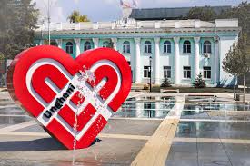
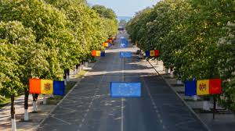
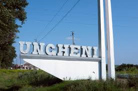
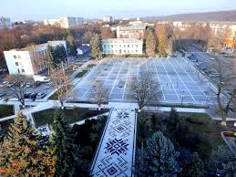
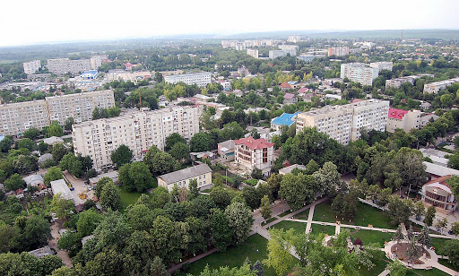

| Prezentare generală | Orașul în imagini | Personalități marcante | Evenimente |
|---|





Ungheni este un municipiu din partea central-vestică a Republicii Moldova,
situat în nemijlocita
apropiere cu Uniunea Europeană.
Prima atestare documentară a localității datează din 20 august 1462, într-un hrisov de la Ștefan cel Mare,
numele inițial (1462-1587) fiind Unghiul.
Suprafață: 16,4 km2
Coordonate: 47°13′ lat. N, 27°48′ long. E
Oraşul se întinde pe o lungime de 9 km de-a lungul frontierei cu România, fiind situat la o altitudine de 62
de metri deasupra nivelului mării.
Populaţie: 38.804
Distanța până la Chișinău – 105 km
Distanța până la Iași (România) – 21 km (pe calea ferată); 45 km (pe automagistrală).
Ungheniul este un centru economic important, având o rețea de drumuri bine dezvoltată, unul dintre
cele mai mari noduri de cale ferată din Republica Moldova și un port fluvial.
În 2008, Ungheniul a fost declarat capitala tineretului din Republica Moldova.
În 2020, la Ungheni a fost lansat programul „EU4Moldova: Regiuni-cheie”, care a marcat un nou început
în dezvoltarea municipiului și localităților învecinate.
Are una dintre cele mai lungi Alei de castani din Europa, plantată în anul 1975, se întinde pe o lungime de
aproximativ 3 kilometri de-a lungul străzii Naționale, fosta stradă Lenin. Cu peste 650 de arbori. În
întregul oraș Ungheni există chiar peste 2.000 de copaci de castan, ceea ce transformă
Ungheniul într-un oraș de poveste.